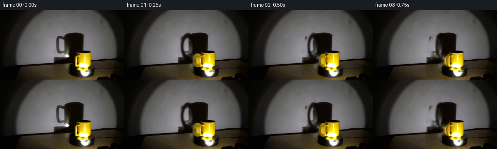
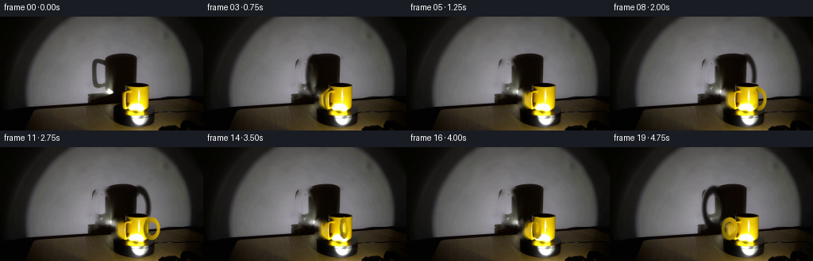

CODING AGENTS AS PIXEL WORLD MODELS
traex/GPT-5.6-Sol · 0076
点击播放 · 原生 RGB 像素
逐轮保存的候选
回放视频、检查图与代码变化。
每份候选均可单独播放。实际图片检查记录在下方工具轨迹中。
候选 01播放与检查图
点击播放 · 原生 RGB 像素


展开代码变化
--- 上一保存版本
+++ 本次保存版本
@@ -0,0 +1,207 @@
+from pathlib import Path
+import math
+import cv2
+import numpy as np
+from PIL import Image
+import artifact_io
+
+# PixelWorld case 0076: analytic image-space animation of the photographed setup.
+# No files other than the supplied first frame are used as visual input.
+ROOT = Path(__file__).resolve().parent
+SRC = np.asarray(Image.open(ROOT / "first_frame.png").convert("RGB"), dtype=np.uint8)
+H, W = SRC.shape[:2]
+SS = 4
+
+
+def ellipse_mask(cx, cy, rx, ry, blur=0.45):
+ """Antialiased floating point ellipse mask."""
+ canvas = np.zeros((H * SS, W * SS), np.uint8)
+ cv2.ellipse(canvas,
+ (int(round(cx * SS)), int(round(cy * SS))),
+ (max(1, int(round(rx * SS))), max(1, int(round(ry * SS)))),
+ 0, 0, 360, 255, -1, lineType=cv2.LINE_AA)
+ m = cv2.resize(canvas, (W, H), interpolation=cv2.INTER_AREA).astype(np.float32) / 255.0
+ if blur:
+ m = cv2.GaussianBlur(m, (0, 0), blur)
+ return np.clip(m, 0, 1)
+
+
+def ring_mask(cx, cy, orx, ory, irx, iry, blur=0.4):
+ outer = ellipse_mask(cx, cy, orx, ory, 0)
+ inner = ellipse_mask(cx, cy, irx, iry, 0)
+ m = np.clip(outer - inner, 0, 1)
+ if blur:
+ m = cv2.GaussianBlur(m, (0, 0), blur)
+ return np.clip(m, 0, 1)
+
+
+def composite(frame, color, alpha):
+ a = alpha[..., None].astype(np.float32)
+ return np.clip(frame.astype(np.float32) * (1.0 - a) + color.astype(np.float32) * a,
+ 0, 255).astype(np.uint8)
+
+
+# Remove only the original *handle* portions of the cup and of its cast shadow.
+# The body, top rim, turntable, and large body-shadow remain photographic pixels.
+# This creates small reveal plates that are covered again at the initial orientation.
+shadow_old = ring_mask(130.5, 76.0, 15.2, 28.0, 7.6, 18.1, 0.8)
+# Include the two attachment bridges, but never erase the main body shadow at x >= 139.
+shadow_old = np.maximum(shadow_old,
+ ellipse_mask(136.0, 57.0, 8.0, 6.0, 0.7) * 0.9)
+shadow_old = np.maximum(shadow_old,
+ ellipse_mask(136.0, 94.0, 8.0, 7.0, 0.7) * 0.9)
+shadow_old[:, 139:] = 0
+shadow_inpaint_mask = (shadow_old > 0.055).astype(np.uint8) * 255
+SHADOW_CLEAN = cv2.inpaint(SRC, shadow_inpaint_mask, 6, cv2.INPAINT_TELEA)
+# Feather the reveal so there is no inpaint boundary.
+SHADOW_CLEAN = composite(SRC, SHADOW_CLEAN, np.clip(shadow_old * 1.35, 0, 1))
+
+cup_old = ellipse_mask(149.2, 103.3, 10.3, 15.1, 0.7)
+cup_old[:, 156:] = 0
+cup_inpaint_mask = (cup_old > 0.04).astype(np.uint8) * 255
+BASE = cv2.inpaint(SHADOW_CLEAN, cup_inpaint_mask, 5, cv2.INPAINT_TELEA)
+BASE = composite(SHADOW_CLEAN, BASE, np.clip(cup_old * 1.3, 0, 1))
+
+# Approximate foreground cup occupancy, used only to prevent a wall shadow from being
+# painted over the photographed mug. It intentionally includes the bright body and rim.
+cup_protect = ellipse_mask(171.0, 106.0, 19.0, 22.5, 0.5)
+cup_protect = np.maximum(cup_protect, ellipse_mask(171.5, 89.0, 17.5, 6.0, 0.5))
+
+# Deterministic fine mottling keeps newly drawn ceramic and shadow regions photographic.
+yy, xx = np.mgrid[0:H, 0:W]
+noise = (np.sin(xx * 1.731 + yy * 0.493) + np.sin(xx * 0.287 - yy * 1.119)) * 0.5
+
+
+def add_shadow_handle(frame, theta):
+ """Large, soft projected handle shadow on the wall."""
+ c, s = math.cos(theta), math.sin(theta)
+ side = abs(c)
+ # Perspective enlargement of the mug handle in the fixed spotlight beam.
+ cx = 153.0 + 23.0 * c
+ cy = 76.0 - 2.2 * s
+ orx = 3.4 + 12.0 * side
+ irx = max(1.1, orx - (4.8 + 0.8 * side))
+ ory = 27.8 - 2.0 * (1.0 - side)
+ iry = 18.0
+ ring = ring_mask(cx, cy, orx, ory, irx, iry, 1.15)
+ # Broad upper/lower attachment shadows. They collapse into the body shadow end-on.
+ attach_x = 153.0 + 15.0 * c
+ bridges = np.maximum(ellipse_mask(attach_x, cy - 18.8, 5.8 + 3.0 * side, 5.0, 1.0),
+ ellipse_mask(attach_x, cy + 19.0, 5.8 + 3.0 * side, 5.4, 1.0))
+ sh = np.maximum(ring, bridges * (0.55 + 0.25 * side))
+ # When end-on, most of the handle lies inside the already dark body shadow.
+ sh *= (0.65 + 0.35 * side)
+ sh *= (1.0 - 0.98 * cup_protect)
+ shade = np.zeros_like(frame, dtype=np.float32)
+ shade[..., 0] = 8 + noise * 1.0
+ shade[..., 1] = 5 + noise * 0.7
+ shade[..., 2] = 2
+ return composite(frame, shade, np.clip(sh * 0.91, 0, 0.91))
+
+
+def add_platform_marks(frame, theta, t):
+ """Low-contrast imperfections orbiting on the black platform."""
+ out = frame
+ # Marks stay on the exposed rim and are hidden beneath the mug footprint.
+ marks = [(-2.55, 0.95, (55, 49, 38)), (-0.25, 0.68, (42, 39, 32)),
+ (1.28, 0.50, (68, 57, 35))]
+ for a0, strength, rgb in marks:
+ a = a0 - (theta - math.pi) # clockwise in the perspective ellipse
+ x = 171.0 + 29.0 * math.cos(a)
+ y = 130.2 - 8.2 * math.sin(a)
+ # Back-half marks are dimmer and the mug hides the central back rim.
+ vis = 0.10 + 0.16 * strength
+ if y < 126.0:
+ vis *= 0.35
+ m = ellipse_mask(x, y, 2.3, 0.75, 0.55)
+ m *= (1.0 - cup_protect)
+ out = composite(out, np.full_like(out, rgb), m * vis)
+ return out
+
+
+def add_cup_handle(frame, theta):
+ """Render the rotating asymmetric ceramic handle with depth occlusion."""
+ c, s = math.cos(theta), math.sin(theta)
+ side = abs(c)
+ # At side view the handle reaches left/right; end-on it becomes a narrow loop.
+ cx = 171.0 + 21.0 * c
+ cy = 103.4 + 1.6 * s
+ orx = 3.2 + 7.4 * side
+ irx = max(1.0, orx - (3.6 + 0.4 * side))
+ ory = 14.4 - 1.0 * (1.0 - side)
+ iry = 8.6
+ ring = ring_mask(cx, cy, orx, ory, irx, iry, 0.32)
+
+ # s>0 is the back half of the revolution: body occludes all but protruding pixels.
+ body_core = ellipse_mask(171.0, 106.0, 16.9, 20.0, 0.25)
+ if s > 0:
+ ring *= (1.0 - body_core * 0.995)
+ elif s < 0:
+ # Front-facing handle is visible against the cup, though slightly foreshortened.
+ ring *= 0.86 + 0.14 * side
+
+ # Fixed studio light: bright upper/right-facing ceramic, ochre in self-shadow.
+ nx = np.clip((xx - (cx - orx)) / max(1.0, 2.0 * orx), 0, 1)
+ ny = np.clip((yy - (cy - ory)) / max(1.0, 2.0 * ory), 0, 1)
+ light = 0.48 + 0.43 * nx + 0.12 * (1.0 - ny)
+ # The far/back half receives less of the spotlight.
+ light *= (0.90 if s > 0 else 1.0)
+ color = np.empty_like(frame, dtype=np.float32)
+ color[..., 0] = 226 * light + noise * 2.0
+ color[..., 1] = 184 * light + noise * 1.5
+ color[..., 2] = 7 * light + 1.5
+ out = composite(frame, color, ring * 0.98)
+
+ # Ceramic attachment pads follow around the cylinder. Back pads are almost hidden.
+ root_x = 171.0 + 16.0 * c
+ pad = np.maximum(ellipse_mask(root_x, cy - 8.6, 3.5, 3.0, 0.35),
+ ellipse_mask(root_x, cy + 8.7, 3.5, 3.0, 0.35))
+ if s > 0:
+ # only visible close to either silhouette
+ pad *= max(0.0, (side - 0.35) / 0.65) * (1.0 - body_core * 0.75)
+ else:
+ pad *= 0.76
+ pad_color = color.copy()
+ pad_color[..., 0] *= 0.92
+ pad_color[..., 1] *= 0.90
+ return composite(out, pad_color, pad * 0.90)
+
+
+def add_rotating_ceramic_speck(frame, theta):
+ """A tiny glaze imperfection traverses the visible cylinder, reinforcing rotation."""
+ # A surface point is visible only on the camera-facing half of the cylinder.
+ phase = theta + 0.72
+ depth = -math.sin(phase)
+ if depth <= 0:
+ return frame
+ x = 171.0 + 13.0 * math.cos(phase)
+ y = 104.0
+ m = ellipse_mask(x, y, 0.75, 2.1, 0.35) * min(1.0, depth * 1.7)
+ glaze = np.zeros_like(frame, dtype=np.float32)
+ glaze[..., 0], glaze[..., 1], glaze[..., 2] = 126, 91, 3
+ return composite(frame, glaze, m * 0.18)
+
+
+def make_frame(i):
+ if i == 0:
+ return SRC.copy() # exact contract requirement
+ t = i / 4.0
+ # One complete, steady clockwise revolution in five seconds.
+ theta = math.pi - 2.0 * math.pi * t / 5.0
+ frame = BASE.copy()
+ frame = add_shadow_handle(frame, theta)
+ frame = add_platform_marks(frame, theta, t)
+ frame = add_cup_handle(frame, theta)
+ frame = add_rotating_ceramic_speck(frame, theta)
+ return frame.astype(np.uint8)
+
+
+def main():
+ frames = np.stack([make_frame(i) for i in range(20)], axis=0).astype(np.uint8)
+ assert frames.shape == (20, 144, 256, 3)
+ assert np.array_equal(frames[0], SRC)
+ artifact_io.save(frames, ROOT)
+
+
+if __name__ == "__main__":
+ main()
候选 02播放与检查图
点击播放 · 原生 RGB 像素

展开代码变化
--- 上一保存版本
+++ 本次保存版本
@@ -78,7 +78,7 @@
side = abs(c)
# Perspective enlargement of the mug handle in the fixed spotlight beam.
cx = 153.0 + 23.0 * c
- cy = 76.0 - 2.2 * s
+ cy = 76.0 + 2.2 * s
orx = 3.4 + 12.0 * side
irx = max(1.1, orx - (4.8 + 0.8 * side))
ory = 27.8 - 2.0 * (1.0 - side)
@@ -106,9 +106,9 @@
marks = [(-2.55, 0.95, (55, 49, 38)), (-0.25, 0.68, (42, 39, 32)),
(1.28, 0.50, (68, 57, 35))]
for a0, strength, rgb in marks:
- a = a0 - (theta - math.pi) # clockwise in the perspective ellipse
+ a = a0 + (theta - math.pi) # clockwise in screen coordinates
x = 171.0 + 29.0 * math.cos(a)
- y = 130.2 - 8.2 * math.sin(a)
+ y = 130.2 + 8.2 * math.sin(a)
# Back-half marks are dimmer and the mug hides the central back rim.
vis = 0.10 + 0.16 * strength
if y < 126.0:
@@ -132,11 +132,12 @@
iry = 8.6
ring = ring_mask(cx, cy, orx, ory, irx, iry, 0.32)
- # s>0 is the back half of the revolution: body occludes all but protruding pixels.
+ # s<0 is the back half (upper half of the projected turntable): the body
+ # occludes all but protruding pixels.
body_core = ellipse_mask(171.0, 106.0, 16.9, 20.0, 0.25)
- if s > 0:
+ if s < 0:
ring *= (1.0 - body_core * 0.995)
- elif s < 0:
+ elif s > 0:
# Front-facing handle is visible against the cup, though slightly foreshortened.
ring *= 0.86 + 0.14 * side
@@ -145,7 +146,7 @@
ny = np.clip((yy - (cy - ory)) / max(1.0, 2.0 * ory), 0, 1)
light = 0.48 + 0.43 * nx + 0.12 * (1.0 - ny)
# The far/back half receives less of the spotlight.
- light *= (0.90 if s > 0 else 1.0)
+ light *= (0.90 if s < 0 else 1.0)
color = np.empty_like(frame, dtype=np.float32)
color[..., 0] = 226 * light + noise * 2.0
color[..., 1] = 184 * light + noise * 1.5
@@ -156,7 +157,7 @@
root_x = 171.0 + 16.0 * c
pad = np.maximum(ellipse_mask(root_x, cy - 8.6, 3.5, 3.0, 0.35),
ellipse_mask(root_x, cy + 8.7, 3.5, 3.0, 0.35))
- if s > 0:
+ if s < 0:
# only visible close to either silhouette
pad *= max(0.0, (side - 0.35) / 0.65) * (1.0 - body_core * 0.75)
else:
@@ -171,7 +172,7 @@
"""A tiny glaze imperfection traverses the visible cylinder, reinforcing rotation."""
# A surface point is visible only on the camera-facing half of the cylinder.
phase = theta + 0.72
- depth = -math.sin(phase)
+ depth = math.sin(phase)
if depth <= 0:
return frame
x = 171.0 + 13.0 * math.cos(phase)
@@ -187,7 +188,8 @@
return SRC.copy() # exact contract requirement
t = i / 4.0
# One complete, steady clockwise revolution in five seconds.
- theta = math.pi - 2.0 * math.pi * t / 5.0
+ # With image y increasing downward, increasing polar angle is clockwise.
+ theta = math.pi + 2.0 * math.pi * t / 5.0
frame = BASE.copy()
frame = add_shadow_handle(frame, theta)
frame = add_platform_marks(frame, theta, t)
候选 03播放与检查图
可观测工具轨迹
实际执行的命令与返回图片。
命令 1exit 0
/bin/bash -lc "cat prompt.txt && printf '\\n--- GENERATION_RULES ---\\n' && cat GENERATION_RULES.md"
命令 2exit 0
/bin/bash -lc "find . -maxdepth 2 -type f -printf '%p\\n' | sort && printf '\\n--- tools ---\\n' && command -v ffmpeg || true && command -v python3 || true"
命令 3exit 0
/bin/bash -lc "python3 - <<'PY'
from PIL import Image
im=Image.open('first_frame.png')
print(im.mode, im.size)
print(im.getextrema())
PY"命令 4exit 0
/bin/bash -lc 'cat artifact_io.py'
命令 5exit 0
/bin/bash -lc "python3 - <<'PY' import importlib.util for m in ['cv2','numpy','PIL','scipy','skimage','imageio']: print(m, bool(importlib.util.find_spec(m))) PY"
命令 6exit 0
/bin/bash -lc "python3 - <<'PY'
from PIL import Image
import numpy as np
im=np.array(Image.open('first_frame.png'))
# quantized most common
q=(im//16)*16
u,c=np.unique(q.reshape(-1,3),axis=0,return_counts=True)
for i in np.argsort(c)[-30:][::-1]: print(tuple(u[i]),int(c[i]))
# coarse grid median colors (16x12 blocks)
for y in range(0,144,12):
print(' | '.join('%02x%02x%02x'%tuple(np.median(im[y:y+12,x:x+16],axis=(0,1)).astype(int)) for x in range(0,256,16)))
PY"命令 7exit 0
/bin/bash -lc "cat > .tmp/analyze.py <<'PY'
import cv2, numpy as np
from PIL import Image
im=np.array(Image.open('first_frame.png'))
hsv=cv2.cvtColor(im,cv2.COLOR_RGB2HSV)
gray=cv2.cvtColor(im,cv2.COLOR_RGB2GRAY)
for name,mask in [
('yellow', (hsv[:,:,0]>15)&(hsv[:,:,0]<40)&(hsv[:,:,1]>90)&(hsv[:,:,2]>50)),
('brightyellow',(hsv[:,:,0]>18)&(hsv[:,:,0]<38)&(hsv[:,:,1]>120)&(hsv[:,:,2]>120)),
('dark',(gray<25)),('black',(gray<10)),('neutral',(hsv[:,:,1]<30)&(gray>50)),
('brown',(hsv[:,:,0]>4)&(hsv[:,:,0]<25)&(hsv[:,:,1]>40)&(hsv[:,:,2]>20))]:
m=mask.astype(np.uint8)
n,lab,st,cent=cv2.connectedComponentsWithStats(m,8)
print('\\n',name,'total',m.sum())
comps=[]
for i in range(1,n):
x,y,w,h,a=st[i]
if a>=10: comps.append((a,(x,y,w,h),tuple(np.round(cent[i],1))))
print(sorted(comps,reverse=True)[:20])
# rows runs yellow and dark
for name,mask in [('Y',(hsv[:,:,0]>15)&(hsv[:,:,0]<40)&(hsv[:,:,1]>90)&(hsv[:,:,2]>50)),('D',gray<25)]:
print('\\nRUNS',name)
for y in range(0,144,4):
xs=np.where(mask[y:y+4].sum(0)>=2)[0]
runs=[]
if len(xs):
bs=np.r_[0,np.where(np.diff(xs)>1)[0]+1,len(xs)]
runs=[(int(xs[a]),int(xs[b-1])) for a,b in zip(bs[:-1],bs[1:]) if b-a>=2]
print(y,runs)
# intensity columns/rows minima within central wall
print('\\nrow stats')
for y in range(0,144,6): print(y, [(x,int(np.mean(gray[y:y+6,x:x+16])),int(np.min(gray[y:y+6,x:x+16])),int(np.max(gray[y:y+6,x:x+16]))) for x in range(0,256,16)])
PY
python3 .tmp/analyze.py"命令 8exit 0
/bin/bash -lc "python3 - <<'PY'
from PIL import Image
import cv2,numpy as np
im=np.array(Image.open('first_frame.png'))
hsv=cv2.cvtColor(im,cv2.COLOR_RGB2HSV); g=cv2.cvtColor(im,cv2.COLOR_RGB2GRAY)
# Each char per 2x2 based med: yellow value levels; neutral; dark
for y in range(78,134,2):
s=''
for x in range(138,230,2):
H=np.median(hsv[y:y+2,x:x+2,0]); S=np.median(hsv[y:y+2,x:x+2,1]); V=np.median(hsv[y:y+2,x:x+2,2]); G=np.median(g[y:y+2,x:x+2])
if S>90 and 15<H<40: ch='Y' if V>210 else ('y' if V>120 else ('g' if V>50 else 'b'))
elif G<10: ch='@'
elif G<25: ch='#'
elif G<50: ch='x'
elif G<90: ch='o'
elif G<140: ch='.'
else: ch=' '
s+=ch
print(f'{y:3}',s)
PY"命令 9exit 0
/bin/bash -lc "python3 - <<'PY'
from PIL import Image
import cv2,numpy as np
im=np.array(Image.open('first_frame.png')); hsv=cv2.cvtColor(im,cv2.COLOR_RGB2HSV); g=cv2.cvtColor(im,cv2.COLOR_RGB2GRAY)
for y in range(80,144,3):
s=''
for x in range(0,256,3):
H=np.median(hsv[y:y+3,x:x+3,0]); S=np.median(hsv[y:y+3,x:x+3,1]); V=np.median(hsv[y:y+3,x:x+3,2]); G=np.median(g[y:y+3,x:x+3])
if S>100 and 14<H<42: ch='Y' if V>180 else ('y' if V>80 else 'b')
elif S>50 and 4<H<35: ch='w' if V>70 else 'r'
elif G<8: ch='@'
elif G<20: ch='#'
elif G<40: ch='x'
elif G<70: ch='o'
elif G<110: ch='.'
elif G<150: ch=','
else: ch=' '
s+=ch
print(f'{y:3}',s)
PY"命令 10exit 0
/bin/bash -lc "python3 - <<'PY'
from PIL import Image
import numpy as np
im=np.array(Image.open('first_frame.png'))
pts=[(x,y) for y in [40,50,60,70,80,85,90,95,100,105,110,115,120,125,130,135,140,143] for x in [20,40,60,80,100,110,120,130,140,150,155,160,170,180,190,200,210,220,235]]
for y in sorted(set(y for x,y in pts)):
print('\\ny=',y)
print(' '.join(f'{x}:{im[y,x,0]:02x}{im[y,x,1]:02x}{im[y,x,2]:02x}' for x,_y in pts if _y==y))
PY"命令 11exit 0
/bin/bash -lc "python3 - <<'PY'
from PIL import Image
import cv2,numpy as np
im=np.array(Image.open('first_frame.png')); hsv=cv2.cvtColor(im,cv2.COLOR_RGB2HSV); g=cv2.cvtColor(im,cv2.COLOR_RGB2GRAY)
for y in range(84,132):
s=''
for x in range(145,225):
H,S,V=hsv[y,x]; G=g[y,x]
if S>100 and 15<H<42: ch='Y' if V>190 else ('y' if V>100 else ('g' if V>40 else 'b'))
elif S>50 and 4<H<35: ch='w' if V>90 else ('r' if V>35 else 'b')
elif G<8: ch='@'
elif G<20: ch='#'
elif G<40: ch='x'
elif G<70: ch='o'
elif G<110: ch='.'
elif G<150: ch=','
else: ch=' '
s+=ch
print(f'{y:3}',s)
PY"命令 12exit 0
/bin/bash -lc "python3 - <<'PY'
from PIL import Image
import numpy as np,cv2
im=np.array(Image.open('first_frame.png'))
for y in range(86,126):
vals=[]
# runs classes in x145:195
cls=[]
for x in range(145,196):
r,g,b=map(int,im[y,x]); hsv=cv2.cvtColor(np.uint8([[[r,g,b]]]),cv2.COLOR_RGB2HSV)[0,0]
H,S,V=map(int,hsv)
if r>230 and g>230 and b>190: c='W'
elif S>100 and 15<H<42: c='Y'
elif max(r,g,b)<15:c='K'
elif max(r,g,b)<40:c='D'
elif S<40:c='N'
else:c='O'
cls.append(c)
# runs
st=0
for i in range(1,len(cls)+1):
if i==len(cls) or cls[i]"'!=cls[st]:
if i-st>=1: vals.append((145+st,145+i-1,cls[st]))
st=i
print(y, vals)
PY'命令 13exit 0
/bin/bash -lc "python3 - <<'PY'
from PIL import Image
import cv2,numpy as np
im=np.array(Image.open('first_frame.png')); gray=cv2.cvtColor(im,cv2.COLOR_RGB2GRAY)
# inpaint bbox based low pixels relative surrounding using polygon all shadow bbox
mask=np.zeros(gray.shape,np.uint8); cv2.rectangle(mask,(108,42),(174,108),255,-1)
bg=cv2.inpaint(im,mask,7,cv2.INPAINT_TELEA); bgg=cv2.cvtColor(bg,cv2.COLOR_RGB2GRAY)
r=gray/(bgg+1)
for y in range(42,109,2):
s=''
for x in range(105,181,2):
q=np.median(r[y:y+2,x:x+2])
s += '@' if q<.12 else ('#' if q<.25 else ('x' if q<.45 else ('o' if q<.7 else ('.' if q<.88 else ' '))))
print(y,s)
PY"命令 14exit 0
/bin/bash -lc "cat > generate.py <<'PY'
from pathlib import Path
import math
import cv2
import numpy as np
from PIL import Image
import artifact_io
# PixelWorld case 0076: analytic image-space animation of the photographed setup.
# No files other than the supplied first frame are used as visual input.
ROOT = Path(__file__).resolve().parent
SRC = np.asarray(Image.open(ROOT / \"first_frame.png\").convert(\"RGB\"), dtype=np.uint8)
H, W = SRC.shape[:2]
SS = 4
def ellipse_mask(cx, cy, rx, ry, blur=0.45):
\"\"\"Antialiased floating point ellipse mask.\"\"\"
canvas = np.zeros((H * SS, W * SS), np.uint8)
cv2.ellipse(canvas,
(int(round(cx * SS)), int(round(cy * SS))),
(max(1, int(round(rx * SS))), max(1, int(round(ry * SS)))),
0, 0, 360, 255, -1, lineType=cv2.LINE_AA)
m = cv2.resize(canvas, (W, H), interpolation=cv2.INTER_AREA).astype(np.float32) / 255.0
if blur:
m = cv2.GaussianBlur(m, (0, 0), blur)
return np.clip(m, 0, 1)
def ring_mask(cx, cy, orx, ory, irx, iry, blur=0.4):
outer = ellipse_mask(cx, cy, orx, ory, 0)
inner = ellipse_mask(cx, cy, irx, iry, 0)
m = np.clip(outer - inner, 0, 1)
if blur:
m = cv2.GaussianBlur(m, (0, 0), blur)
return np.clip(m, 0, 1)
def composite(frame, color, alpha):
a = alpha[..., None].astype(np.float32)
return np.clip(frame.astype(np.float32) * (1.0 - a) + color.astype(np.float32) * a,
0, 255).astype(np.uint8)
# Remove only the original *handle* portions of the cup and of its cast shadow.
# The body, top rim, turntable, and large body-shadow remain photographic pixels.
# This creates small reveal plates that are covered again at the initial orientation.
shadow_old = ring_mask(130.5, 76.0, 15.2, 28.0, 7.6, 18.1, 0.8)
# Include the two attachment bridges, but never erase the main body shadow at x >= 139.
shadow_old = np.maximum(shadow_old,
ellipse_mask(136.0, 57.0, 8.0, 6.0, 0.7) * 0.9)
shadow_old = np.maximum(shadow_old,
ellipse_mask(136.0, 94.0, 8.0, 7.0, 0.7) * 0.9)
shadow_old[:, 139:] = 0
shadow_inpaint_mask = (shadow_old > 0.055).astype(np.uint8) * 255
SHADOW_CLEAN = cv2.inpaint(SRC, shadow_inpaint_mask, 6, cv2.INPAINT_TELEA)
# Feather the reveal so there is no inpaint boundary.
SHADOW_CLEAN = composite(SRC, SHADOW_CLEAN, np.clip(shadow_old * 1.35, 0, 1))
cup_old = ellipse_mask(149.2, 103.3, 10.3, 15.1, 0.7)
cup_old[:, 156:] = 0
cup_inpaint_mask = (cup_old > 0.04).astype(np.uint8) * 255
BASE = cv2.inpaint(SHADOW_CLEAN, cup_inpaint_mask, 5, cv2.INPAINT_TELEA)
BASE = composite(SHADOW_CLEAN, BASE, np.clip(cup_old * 1.3, 0, 1))
# Approximate foreground cup occupancy, used only to prevent a wall shadow from being
# painted over the photographed mug. It intentionally includes the bright body and rim.
cup_protect = ellipse_mask(171.0, 106.0, 19.0, 22.5, 0.5)
cup_protect = np.maximum(cup_protect, ellipse_mask(171.5, 89.0, 17.5, 6.0, 0.5))
# Deterministic fine mottling keeps newly drawn ceramic and shadow regions photographic.
yy, xx = np.mgrid[0:H, 0:W]
noise = (np.sin(xx * 1.731 + yy * 0.493) + np.sin(xx * 0.287 - yy * 1.119)) * 0.5
def add_shadow_handle(frame, theta):
\"\"\"Large, soft projected handle shadow on the wall.\"\"\"
c, s = math.cos(theta), math.sin(theta)
side = abs(c)
# Perspective enlargement of the mug handle in the fixed spotlight beam.
cx = 153.0 + 23.0 * c
cy = 76.0 - 2.2 * s
orx = 3.4 + 12.0 * side
irx = max(1.1, orx - (4.8 + 0.8 * side))
ory = 27.8 - 2.0 * (1.0 - side)
iry = 18.0
ring = ring_mask(cx, cy, orx, ory, irx, iry, 1.15)
# Broad upper/lower attachment shadows. They collapse into the body shadow end-on.
attach_x = 153.0 + 15.0 * c
bridges = np.maximum(ellipse_mask(attach_x, cy - 18.8, 5.8 + 3.0 * side, 5.0, 1.0),
ellipse_mask(attach_x, cy + 19.0, 5.8 + 3.0 * side, 5.4, 1.0))
sh = np.maximum(ring, bridges * (0.55 + 0.25 * side))
# When end-on, most of the handle lies inside the already dark body shadow.
sh *= (0.65 + 0.35 * side)
sh *= (1.0 - 0.98 * cup_protect)
shade = np.zeros_like(frame, dtype=np.float32)
shade[..., 0] = 8 + noise * 1.0
shade[..., 1] = 5 + noise * 0.7
shade[..., 2] = 2
return composite(frame, shade, np.clip(sh * 0.91, 0, 0.91))
def add_platform_marks(frame, theta, t):
\"\"\"Low-contrast imperfections orbiting on the black platform.\"\"\"
out = frame
# Marks stay on the exposed rim and are hidden beneath the mug footprint.
marks = [(-2.55, 0.95, (55, 49, 38)), (-0.25, 0.68, (42, 39, 32)),
(1.28, 0.50, (68, 57, 35))]
for a0, strength, rgb in marks:
a = a0 - (theta - math.pi) # clockwise in the perspective ellipse
x = 171.0 + 29.0 * math.cos(a)
y = 130.2 - 8.2 * math.sin(a)
# Back-half marks are dimmer and the mug hides the central back rim.
vis = 0.10 + 0.16 * strength
if y < 126.0:
vis *= 0.35
m = ellipse_mask(x, y, 2.3, 0.75, 0.55)
m *= (1.0 - cup_protect)
out = composite(out, np.full_like(out, rgb), m * vis)
return out
def add_cup_handle(frame, theta):
\"\"\"Render the rotating asymmetric ceramic handle with depth occlusion.\"\"\"
c, s = math.cos(theta), math.sin(theta)
side = abs(c)
# At side view the handle reaches left/right; end-on it becomes a narrow loop.
cx = 171.0 + 21.0 * c
cy = 103.4 + 1.6 * s
orx = 3.2 + 7.4 * side
irx = max(1.0, orx - (3.6 + 0.4 * side))
ory = 14.4 - 1.0 * (1.0 - side)
iry = 8.6
ring = ring_mask(cx, cy, orx, ory, irx, iry, 0.32)
# s>0 is the back half of the revolution: body occludes all but protruding pixels.
body_core = ellipse_mask(171.0, 106.0, 16.9, 20.0, 0.25)
if s > 0:
ring *= (1.0 - body_core * 0.995)
elif s < 0:
# Front-facing handle is visible against the cup, though slightly foreshortened.
ring *= 0.86 + 0.14 * side
# Fixed studio light: bright upper/right-facing ceramic, ochre in self-shadow.
nx = np.clip((xx - (cx - orx)) / max(1.0, 2.0 * orx), 0, 1)
ny = np.clip((yy - (cy - ory)) / max(1.0, 2.0 * ory), 0, 1)
light = 0.48 + 0.43 * nx + 0.12 * (1.0 - ny)
# The far/back half receives less of the spotlight.
light *= (0.90 if s > 0 else 1.0)
color = np.empty_like(frame, dtype=np.float32)
color[..., 0] = 226 * light + noise * 2.0
color[..., 1] = 184 * light + noise * 1.5
color[..., 2] = 7 * light + 1.5
out = composite(frame, color, ring * 0.98)
# Ceramic attachment pads follow around the cylinder. Back pads are almost hidden.
root_x = 171.0 + 16.0 * c
pad = np.maximum(ellipse_mask(root_x, cy - 8.6, 3.5, 3.0, 0.35),
ellipse_mask(root_x, cy + 8.7, 3.5, 3.0, 0.35))
if s > 0:
# only visible close to either silhouette
pad *= max(0.0, (side - 0.35) / 0.65) * (1.0 - body_core * 0.75)
else:
pad *= 0.76
pad_color = color.copy()
pad_color[..., 0] *= 0.92
pad_color[..., 1] *= 0.90
return composite(out, pad_color, pad * 0.90)
def add_rotating_ceramic_speck(frame, theta):
\"\"\"A tiny glaze imperfection traverses the visible cylinder, reinforcing rotation.\"\"\"
# A surface point is visible only on the camera-facing half of the cylinder.
phase = theta + 0.72
depth = -math.sin(phase)
if depth <= 0:
return frame
x = 171.0 + 13.0 * math.cos(phase)
y = 104.0
m = ellipse_mask(x, y, 0.75, 2.1, 0.35) * min(1.0, depth * 1.7)
glaze = np.zeros_like(frame, dtype=np.float32)
glaze[..., 0], glaze[..., 1], glaze[..., 2] = 126, 91, 3
return composite(frame, glaze, m * 0.18)
def make_frame(i):
if i == 0:
return SRC.copy() # exact contract requirement
t = i / 4.0
# One complete, steady clockwise revolution in five seconds.
theta = math.pi - 2.0 * math.pi * t / 5.0
frame = BASE.copy()
frame = add_shadow_handle(frame, theta)
frame = add_platform_marks(frame, theta, t)
frame = add_cup_handle(frame, theta)
frame = add_rotating_ceramic_speck(frame, theta)
return frame.astype(np.uint8)
def main():
frames = np.stack([make_frame(i) for i in range(20)], axis=0).astype(np.uint8)
assert frames.shape == (20, 144, 256, 3)
assert np.array_equal(frames[0], SRC)
artifact_io.save(frames, ROOT)
if __name__ == \"__main__\":
main()
PY
python3 generate.py
python3 - <<'PY'
from pathlib import Path
from PIL import Image
import numpy as np
f=np.stack([np.array(Image.open(f'frames/{i:02d}.png')) for i in range(20)])
s=np.array(Image.open('first_frame.png'))
print('shape/dtype', f.shape, f.dtype)
print('frame0 exact', np.array_equal(f[0],s))
print('changed pixels:', [int(np.any(f[i]"'!=f[i-1],axis=2).sum()) for i in range(1,20)])
print('"'mean abs deltas:', [round(float(np.abs(f[i].astype(int)-f[i-1].astype(int)).mean()),3) for i in range(1,20)])
print('outputs:', [(p.name,p.stat().st_size) for p in map(Path,['pixels.npz','inspection.png','transition_check.png','index.html'])])
PY"命令 15exit 0
/bin/bash -lc "python3 generate.py && python3 - <<'PY'
from PIL import Image
import cv2,numpy as np
F=np.stack([np.array(Image.open(f'frames/{i:02d}.png')) for i in range(20)])
S=np.array(Image.open('first_frame.png'))
print('exact',np.array_equal(F[0],S),'shape',F.shape,F.dtype)
# Motion direction proxy: colored mug extents and dark projected shadow centroid for cardinal frames
for i in [0,1,5,10,15,19]:
im=F[i]; hsv=cv2.cvtColor(im,cv2.COLOR_RGB2HSV); g=cv2.cvtColor(im,cv2.COLOR_RGB2GRAY)
ym=(hsv[:,:,0]>15)&(hsv[:,:,0]<42)&(hsv[:,:,1]>90)&(hsv[:,:,2]>45)&(np.indices((144,256))[0]>=82)&(np.indices((144,256))[0]<126)
ys,xs=np.where(ym)
# dark region near shadow (excluding edges and cup)
dm=(g<25); dm[:42]=False; dm[110:]=False; dm[:,:105]=False; dm[:,181:]=False
dys,dxs=np.where(dm)
print(i,'yellow bbox', (xs.min(),ys.min(),xs.max(),ys.max()),'yellow centroid',tuple(np.round([xs.mean(),ys.mean()],1)), 'dark centroid', tuple(np.round([dxs.mean(),dys.mean()],1)), 'diff0',round(np.abs(im.astype(int)-S.astype(int)).mean(),3))
# Compact region maps at key frames
for fi in [1,5,10,15,19]:
im=F[fi]; hsv=cv2.cvtColor(im,cv2.COLOR_RGB2HSV); g=cv2.cvtColor(im,cv2.COLOR_RGB2GRAY)
print('\\nFRAME',fi)
for y in range(44,130,4):
s=''
for x in range(106,212,4):
Hh=np.median(hsv[y:y+4,x:x+4,0]); Ss=np.median(hsv[y:y+4,x:x+4,1]); V=np.median(hsv[y:y+4,x:x+4,2]); G=np.median(g[y:y+4,x:x+4])
if Ss>90 and 15<Hh<42: ch='Y' if V>150 else 'y'
elif G<12:ch='@'
elif G<28:ch='#'
elif G<55:ch='x'
elif G<95:ch='o'
elif G<145:ch='.'
else:ch=' '
s+=ch
print(s)
PY"命令 16exit 0
/bin/bash -lc "python3 -m py_compile generate.py artifact_io.py && python3 - <<'PY'
import numpy as np
from PIL import Image
p=np.load('pixels.npz')['pixels']
assert p.shape==(144,256,20),p.shape
assert p.dtype==np.uint32,p.dtype
rgb=np.stack([(p>>16)&255,(p>>8)&255,p&255],axis=-1).astype(np.uint8).transpose(2,0,1,3)
src=np.array(Image.open('first_frame.png').convert('RGB'))
assert rgb.shape==(20,144,256,3)
assert np.array_equal(rgb[0],src)
assert all(np.any(rgb[i]"'!=rgb[i-1]) for i in range(1,20))
print('"'contract_ok', rgb.shape, rgb.dtype, 'frame0_exact=True')
PY"命令 17exit 0
/bin/bash -lc 'git status --short 2>/dev/null || true; du -h generate.py pixels.npz index.html inspection.png'
保存候选 3 份；完成命令 17 次；可验证图片返回 0 张。原始 API 响应与完整日志保留在本地。